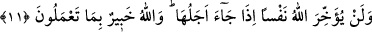

Âlimlerden biri şöyle demiştir: Bu âyet zekâtı geciktirmeden vermenin farz
bulunduğuna delildir. Çünkü ölüm her an gelebilir. Diğer ibâdetler de böyledir. Vakti
gelince geciktirmeden yerine getirilmelidir.
Öncelikli olan zekâtı çoğunlukla ilk farz olduğu zamanda vermek müstehabdır. Bundan
dolayıdır ki, bazı müctehidler, Rasûlullah’ın: “İlk vakitte Allah’ın rızâsı vardır.”[149]
Yâni bunda Allah’ın rızâsını kazanmak için müsabaka vardır ve amel etmeyi
önemsemektir, anlamındaki hadisiyle amel ederek, zekâtı ilk farz olduğu vakitte vermeyi
tercih etmişlerdir. Çünkü insan vaktin sonuna yetişip yetişemeyeceğini bilemez.
11. Allah, eceli geldiğinde hiç kimseyi (ölümünü) ertelemez. Allah,
yaptıklarınızdan haberdardır.
“Allah, eceli geldiğinde hiç kimseyi (ölümünü) ertelemez.” Yâni ömrünün sonu
geldiğinde, ister itâat, ister isyan etmiş olsun; ister küçük, ister büyük, kim olursa olsun
Allah kimseye mehil vermez. Yahut ecelden, ömrün başından sonuna kadar uzanan
zaman kasdedilirse, zaman sona erdiğinde, demek olur. Ömür sona erdiğinde ona ne bir
şey ekleyebilir ne de çıkarabilirler.
Şeyh Sa‘dî (k.s) demiştir ki:
Bunu çabuk yap, zira zamanın dönmesiyle peymânen dolduğu an,
Sana bir lâhza aman verilmez.
Âlimlerin bir kısmı bu âyet-i kerimeden Peygamberimiz’in (s.a.) ömrünü
çıkarmışlardır. Çünkü bu sûre, altmış üçüncü sûrenin başıdır. Onun dünyada
yitirilmesiyle bir aldanış anlamı çıkarılsın, diye de bu sûreyi Teğâbün sûresi takib
etmiştir.
Bir kısım âlimler şöyle demişlerdir: Ölüm iki kısımdır. Izdırârî/zorunlu ölüm, yaygın
olarak bilinen bu kısımdır. Müsemmâ/belirlenmiş ecel ve hakkında, “Her ümmetin bir
eceli vardır. Ecelleri gelince ne bir an geri kalırlar ne de bir an ileri gidebilirler”
(el-A’râf, 7/34) buyurulan ölümdür. Diğer ölüm de, ihtiyârî/isteğe bağlı olan ölümdür.
Bu da: “Sonra ölüm zamanını takdir eden ancak O’dur. Bir de O’nun katında
muayyen bir ecel (kıyamet) vardır.” (el-En’âm, 6/2) âyet-i kerîmesinde belirtilmiş
olan ölümdür.
Bu çeşit ölüm ancak Allah Teâlâ’yı kendileri için perdelerin açıldığı ölülerin
tevhîdiyle birleyen kimse içindir, başkaları için değildir. Bu açılma bu vakit içinde
olursa bunu bilen halktan olan kimsenin dışında kimseye mutluluk vermez. Perde
açıldığında, ayne’l-yakîn olarak bildiğini görmüş olur. İşte o saîd/mutlu olan kimsedir.